Zakład we Wrzosowej
Zakład Pogrzebowy „Morfeusz” mieści się przy ul. Górnej 30 we Wrzosowej, w gminie Poczesna pod Częstochową. Mamy własną kaplicę, chłodnię i karawany. Poniżej zdjęcia zakładu i ceremonii, które przygotowywaliśmy.
Telefon całodobowy: 601 460 964
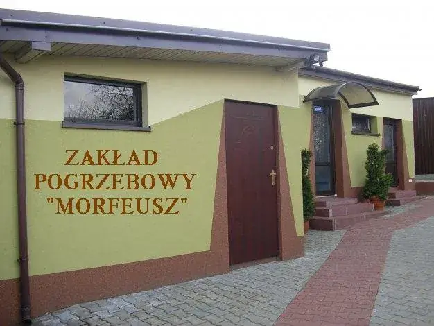
Siedziba i biuro
W biurze zakładu przy ul. Górnej 30 ustalamy szczegóły pogrzebu, można też wybrać urnę i trumnę.

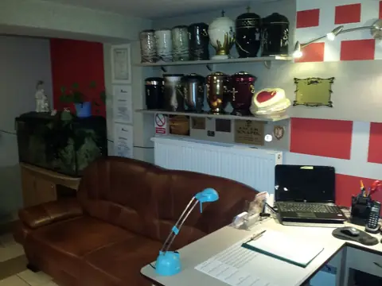

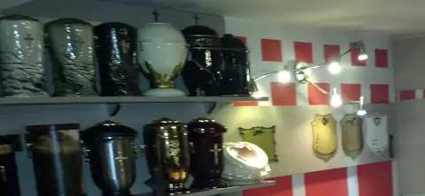
Kaplica
Przy zakładzie jest kaplica, w której rodzina może pożegnać zmarłego przed pogrzebem.

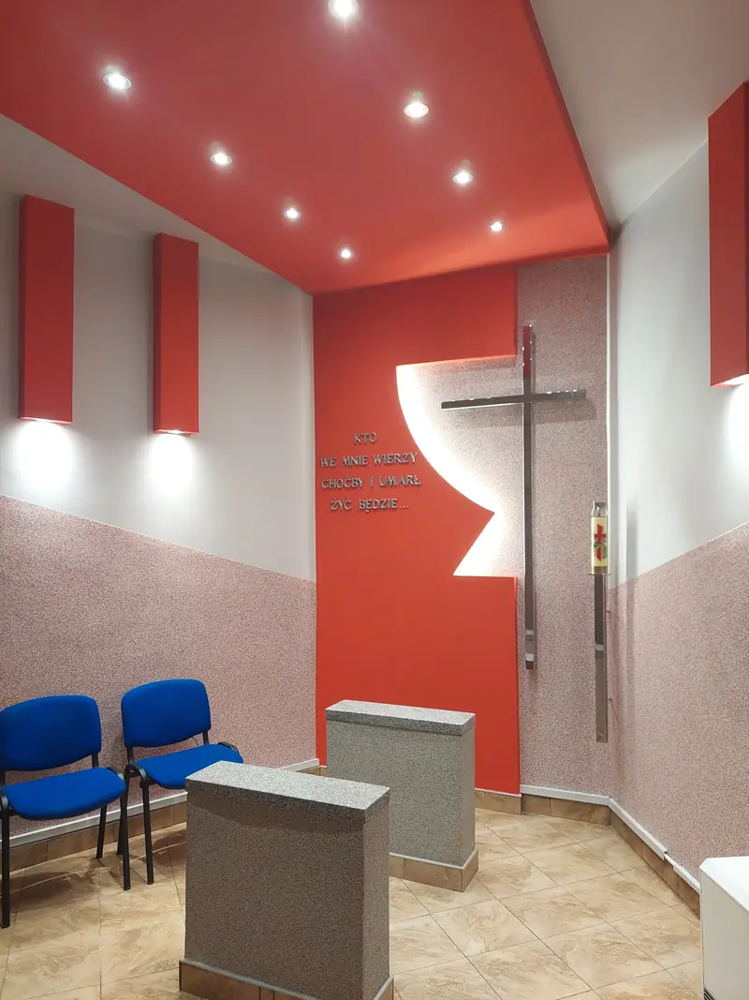

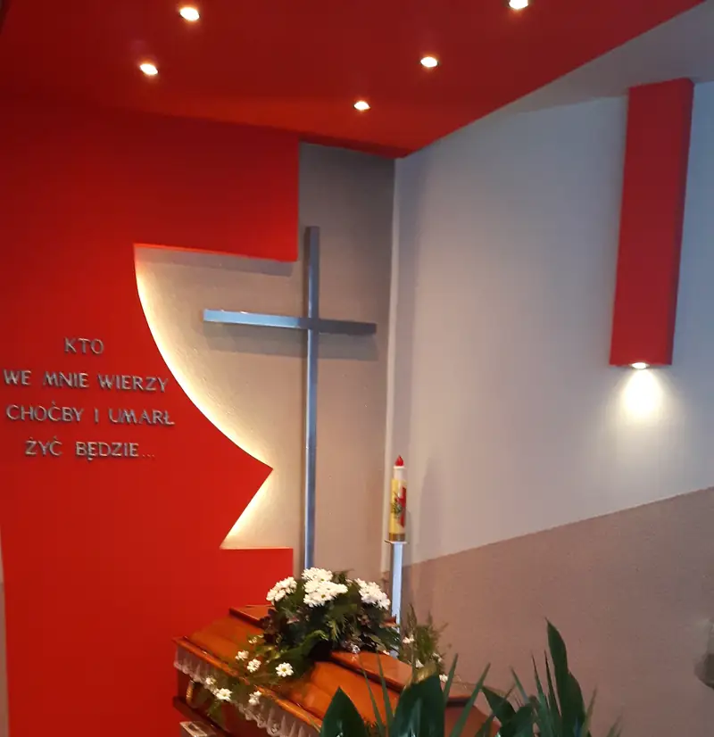
Ceremonia
Przygotowujemy oprawę ceremonii w kościele: urnę lub trumnę na katafalku, świece, wieńce i wiązanki.

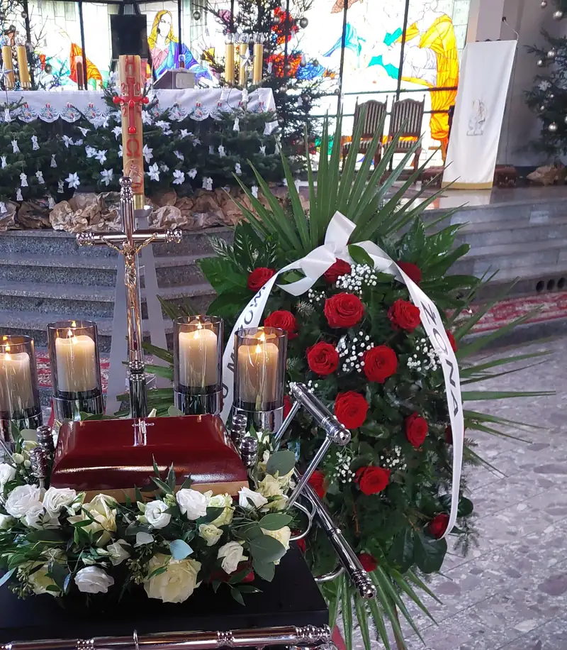
Chłodnia i transport
Własna chłodnia i karawany pozwalają nam zająć się zmarłym od razu, o każdej porze.


Na cmentarzu
Przy grobie rozstawiamy namiot z zasłonami, teren wokół wykładamy matą, a przy pogrzebie urnowym przygotowujemy stojak na urnę.

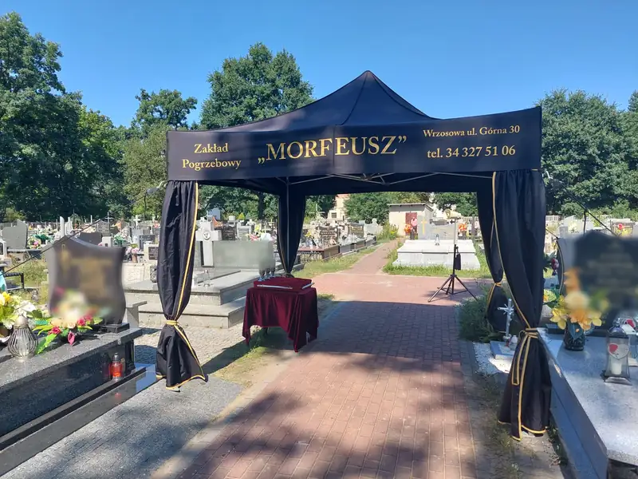

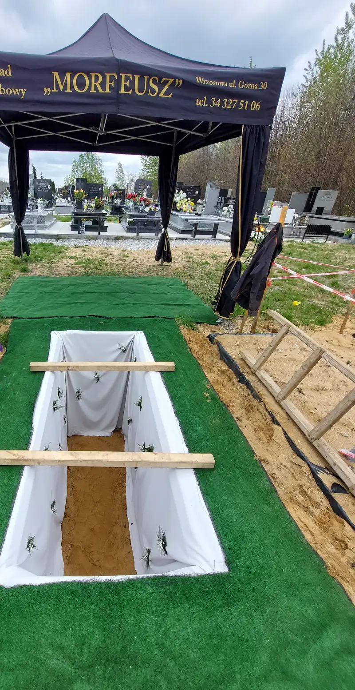

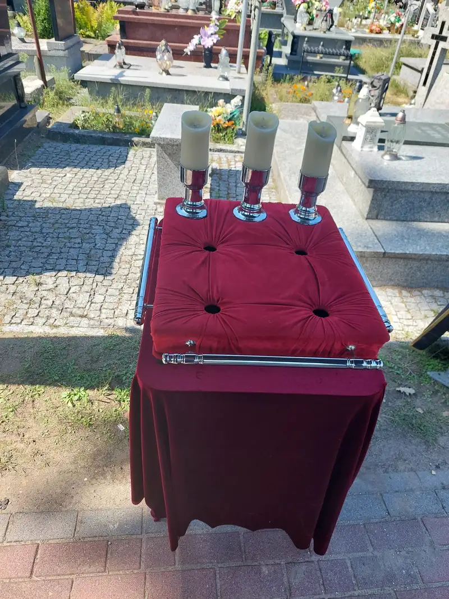

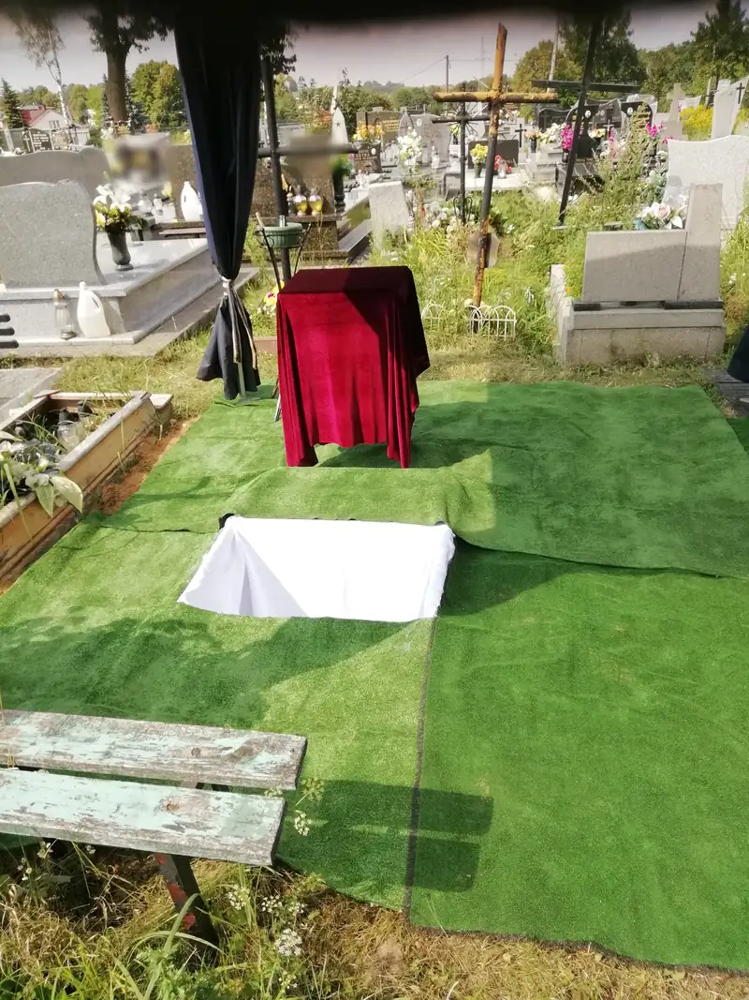

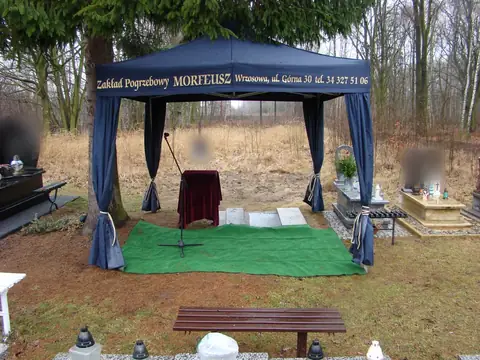

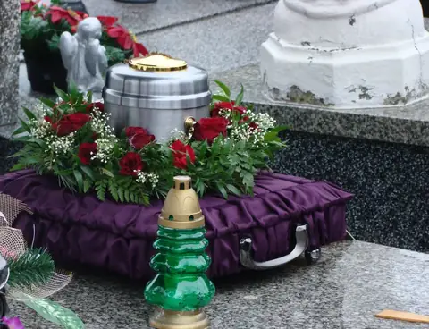